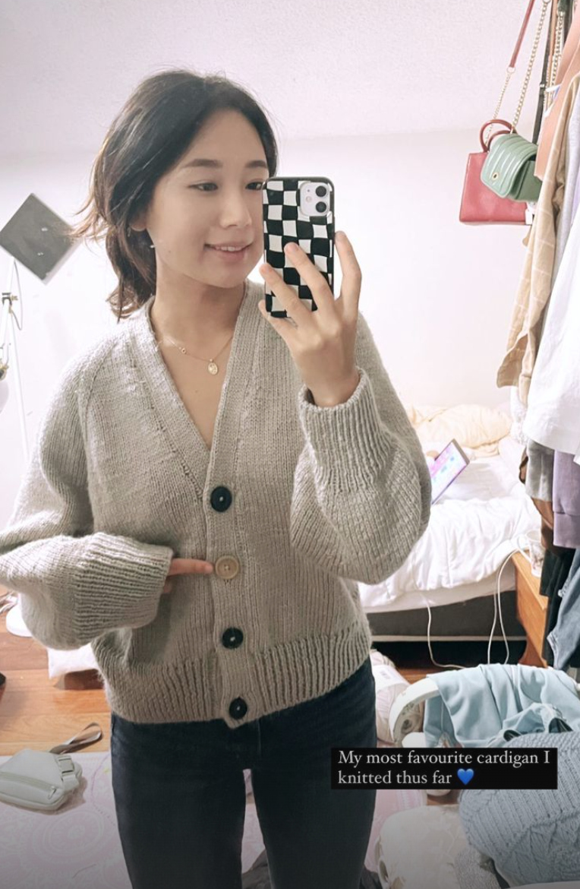
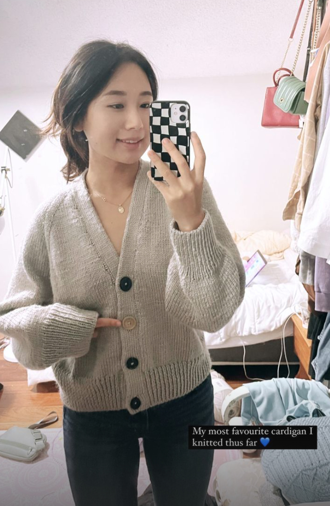
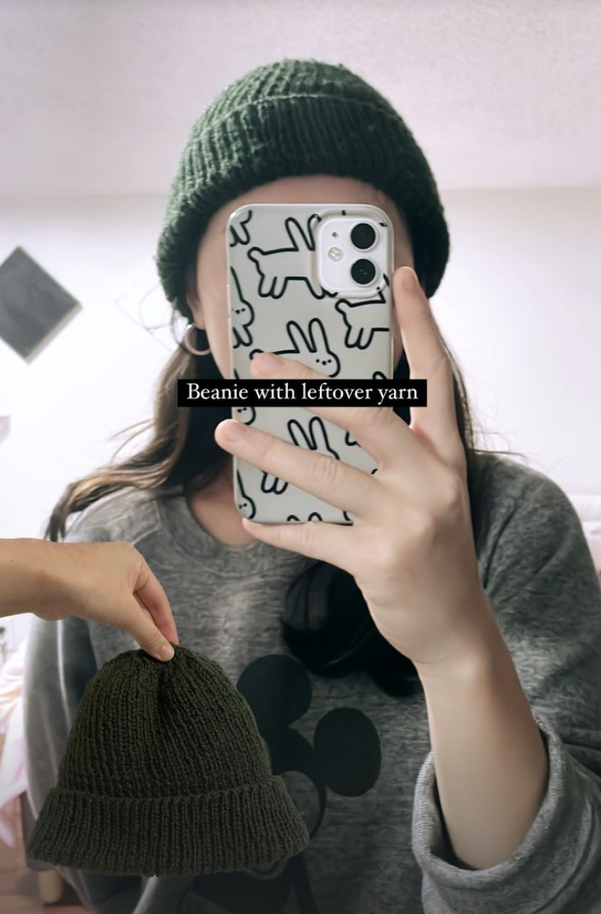
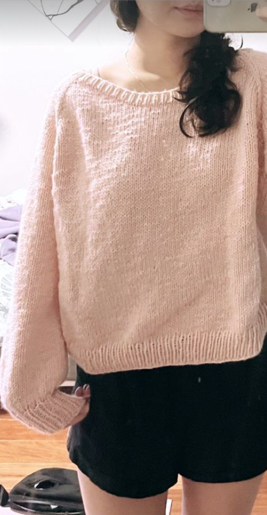
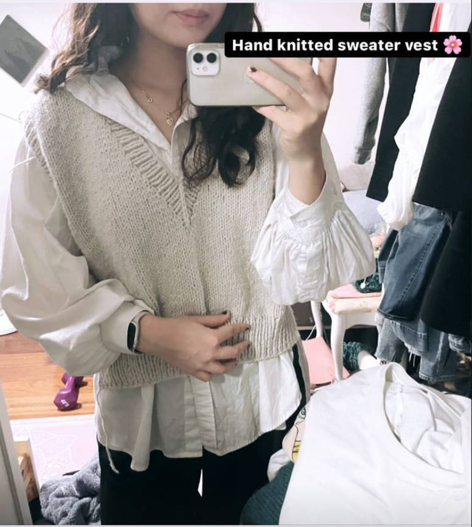
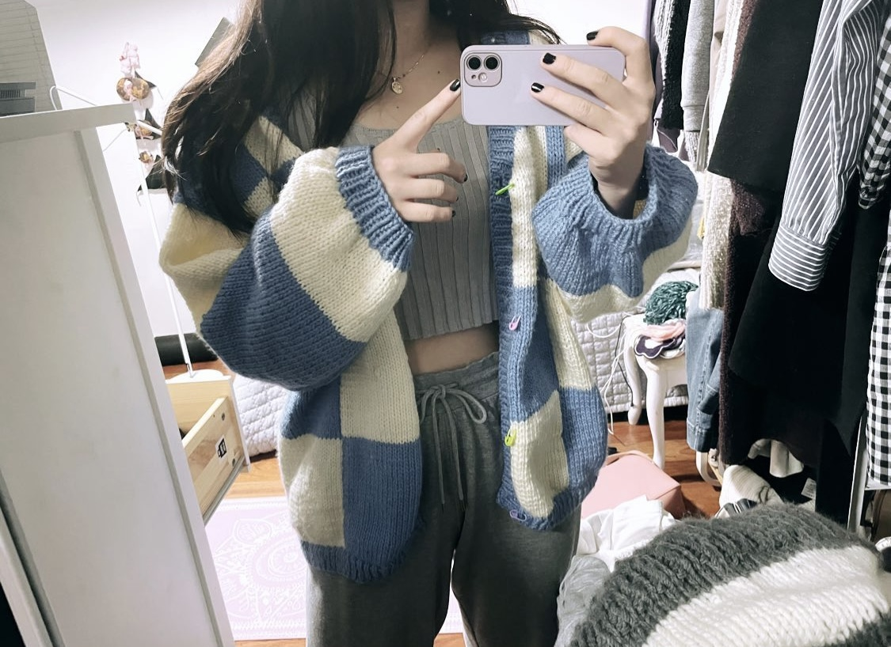
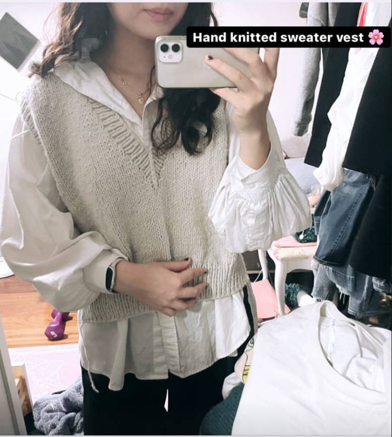
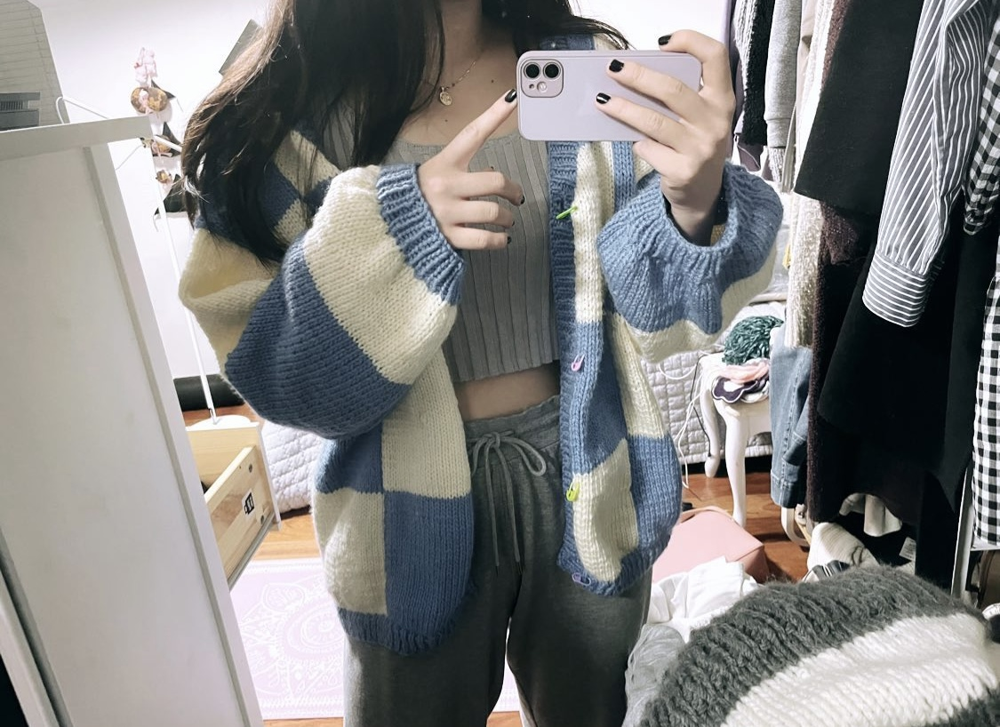

Playground
ABOUT
Knitting is my daily hobby that I do everyday to wind down and destress. I started learning how to knit back in spring of 2022 I learned through Youtube videos and online articles. Here are some of my free-hand knitted pieces sprinkled with some I created through patterns.
 



 


